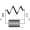

SpringDamperParallelLinear spring and linear damper in parallel |

|
Information
This information is part of the Modelica Standard Library maintained by the Modelica Association.
Linear spring and linear damper in parallel acting as line force between frame_a and frame_b. A force f is exerted on the origin of frame_b and with opposite sign on the origin of frame_a along the line from the origin of frame_a to the origin of frame_b according to the equation:
f = c*(s - s_unstretched) + d*der(s);
where "c", "s_unstretched" and "d" are parameters, "s" is the distance between the origin of frame_a and the origin of frame_b and der(s) is the time derivative of s.
Parameters (11)
| s_small |
Value: 1e-10 Type: Distance (m) Description: Prevent zero-division if distance between frame_a and frame_b is zero |
|---|---|
| fixedRotationAtFrame_a |
Value: false Type: Boolean Description: =true, if rotation frame_a.R is fixed (to directly connect line forces) |
| fixedRotationAtFrame_b |
Value: false Type: Boolean Description: =true, if rotation frame_b.R is fixed (to directly connect line forces) |
| useHeatPort |
Value: false Type: Boolean Description: =true, if heatPort is enabled |
| T |
Value: 293.15 Type: Temperature (K) Description: Fixed device temperature if useHeatPort = false |
| animation |
Value: true Type: Boolean Description: = true, if animation shall be enabled |
| c |
Value: Type: TranslationalSpringConstant (N/m) Description: Spring constant |
| s_unstretched |
Value: 0 Type: Length (m) Description: Unstretched spring length |
| d |
Value: 0 Type: TranslationalDampingConstant (N·s/m) Description: Damping constant |
| length_a |
Value: world.defaultForceLength Type: Distance (m) Description: Length of damper cylinder at frame_a side |
| numberOfWindings |
Value: 5 Type: Integer Description: Number of spring windings |
Inputs (8)
| diameter_a |
Default Value: world.defaultForceWidth Type: Diameter (m) Description: Diameter of damper cylinder at frame_a side |
|---|---|
| diameter_b |
Default Value: 0.6 * diameter_a Type: Diameter (m) Description: Diameter of damper cylinder at frame_b side |
| color_a |
Default Value: {100, 100, 100} Type: Color Description: Color of damper cylinder at frame_a |
| color_b |
Default Value: {155, 155, 155} Type: Color Description: Color of damper cylinder at frame_b |
| specularCoefficient |
Default Value: world.defaultSpecularCoefficient Type: SpecularCoefficient Description: Reflection of ambient light (= 0: light is completely absorbed) |
| width |
Default Value: world.defaultForceWidth Type: Distance (m) Description: Width of spring |
| coilWidth |
Default Value: width / 10 Type: Distance (m) Description: Width of spring coil |
| color |
Default Value: Modelica.Mechanics.MultiBody.Types.Defaults.SpringColor Type: Color Description: Color of spring |
Connectors (3)
| frame_a |
Type: Frame_a Description: Coordinate system a fixed to the component with one cut-force and cut-torque |
|
|---|---|---|
| frame_b |
Type: Frame_b Description: Coordinate system b fixed to the component with one cut-force and cut-torque |
|
| heatPort |
Type: HeatPort_a Description: Optional port to which dissipated losses are transported in form of heat |
Components (4)
Used in Examples (1)
|
Modelica.Mechanics.MultiBody.Examples.Elementary
Demonstrate the modeling of heat losses |